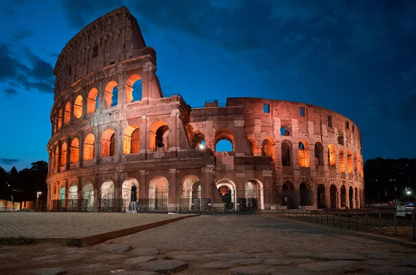
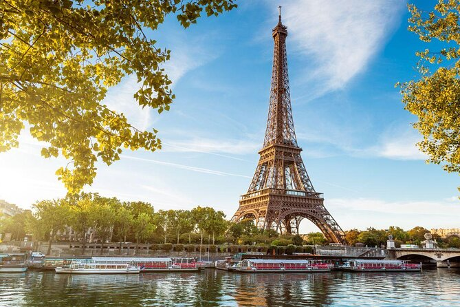

Já pensou em viver um sonho acordado? A Disney não é só um parque, é um universo onde tudo que a gente imaginava quando criança ganha vida. Voar pra lá é mais do que uma viagem, é uma chance de sentir aquela magia única, rir como criança, se emocionar a cada desfile e esquecer do mundo por alguns dias. Vamos? A Disney está te esperando com castelos, personagens, e memórias que você vai guardar pra sempre.

Viage para o coliseu de roma
Imagine caminhar pelos mesmos corredores onde gladiadores fizeram história, sentindo o peso de séculos sob seus pés, viajar para o Coliseu é mergulhar na história viva de Roma. Um lugar onde o passado ganha forma e a grandiosidade impressiona. Se você busca uma viagem com significado, beleza e emoção, o Coliseu te espera. Vamos?

Viage para Paris
Paris é daquelas cidades que tocam a gente de um jeito especial. É mais do que ver a Torre Eiffel, é sentir o clima das ruas, se perder pelos cafés, escutar a música de um artista de rua enquanto o sol se põe. Cada esquina tem charme, cada momento tem um ar de filme. Se você busca beleza, cultura e uma pitada de romance, Paris é o destino perfeito. Vamos?